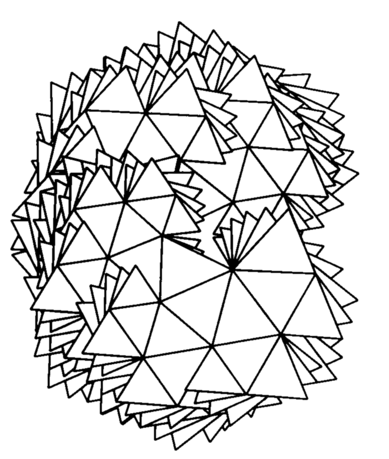

Miscellaneous
Selected talks, notes, and photos.
Selected talks
- CIRM in Marseille — Periods, functoriality and L-functions, January 10–14, 2022.
- Number Theory Seminar, Kyoto University — Distinction and quadratic base change for regular supercuspidal representations, January 26, 2024.
-
Distinction and quadratic base change for regular supercuspidal representations
Number theory seminar, Kyoto University, January 26, 2024.
Photos
